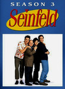
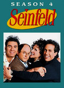
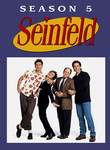
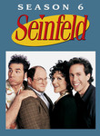
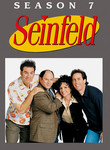
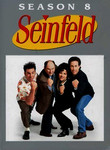
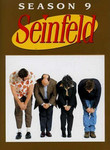

Seinfeld
Stephen Klancher
...has seen 2
...has seen 0 hours
...has not seen 2.9 hours

Timeline
Most Recent:
The Smelly Car
...has seen 2
...has seen 0 hours
...has not seen 2.9 hours
Timeline
Most Recent:
The Smelly Car







